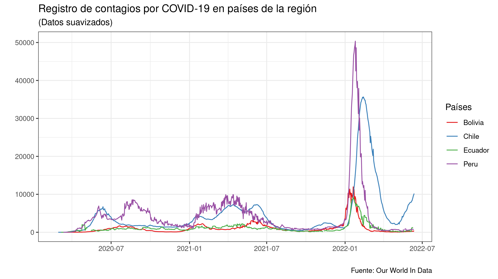
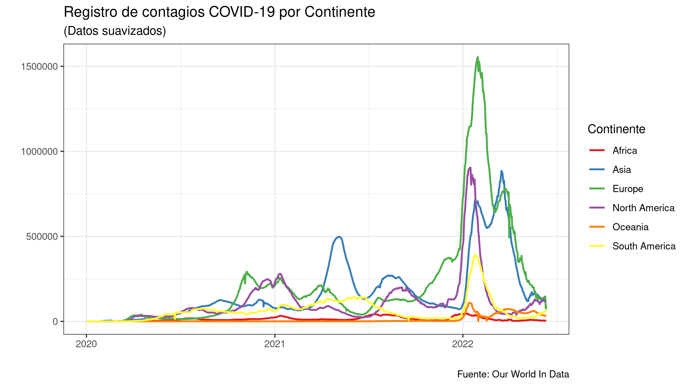
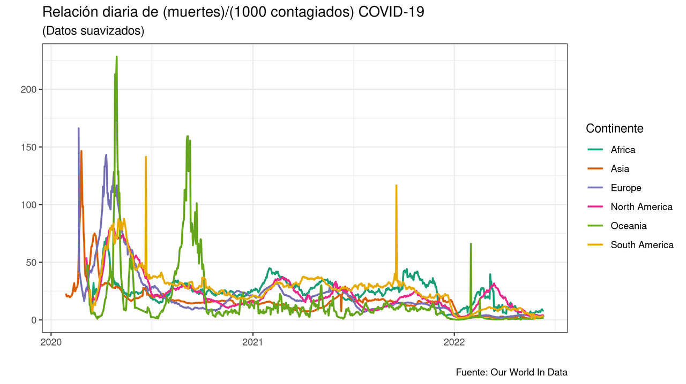

Cómo filtrar datos de tu tabla con dplyr en R

En este artículo mostraremos como usar algunas funciones importantes de la biblioteca de dplyr, específicamente veremos como usar las funciones filter(), select(), group_by(), sumarize() y mutate() dentro de un ejemplo práctico.
Requisitos
Por comodidad usamos la biblioteca pacman como gestor de paquetes.
# install.packages("pacman") Para instalar la biblioteca pacman
library(pacman) # Gestor de paquetes en R
p_load("readr") # Biblioteca para importar archivos csv
p_load("dplyr") # Biblioteca para manipular datos
p_load("ggplot2") # Biblioteca para graficar datos
Recuerde, que tambien puede instalar y abrir las bibliotecas de manera tradicional, por ejemplo con: install.packages("readr"), luego abrir la misma biblioteca con library(readr).
Importando nuestros datos
La base de datos usada ha sido descargada de Our World In Data, la cual muestra los datos recolectados de la reciente pandemia. Una vez descargada nuestra base de datos en formato .csv, la importamos a nuestro entorno de R. Puede descargar los archivos usados en este artículo Repositorio de este artículo aquí.
Importamos los el archivo .csv a la variable covid_data.
covid_data <- read_csv("owid-covid-data.csv")
En la consola observamos lo siguiente:
Rows: 193573 Columns: 67
── Column specification ────────────────────────────────────────────────────────────────────────────
Delimiter: ","
chr (4): iso_code, continent, location, tests_units
dbl (62): total_cases, new_cases, new_cases_smoothed, total_deaths, new_deaths, new_deaths_smoo...
date (1): date
ℹ Use `spec()` to retrieve the full column specification for this data.
ℹ Specify the column types or set `show_col_types = FALSE` to quiet this message.
Como puede ver esta tabla es muy extensa, contiene 67 columnas (variables) y 193573 filas, manejar los datos directamente de esta tabla puede ser complicado, por lo que se recomienda reducir las variables o extraer información relevante para nosotros.
Si quiere explorar los datos manualmente puede ejecutar la función (View(datos_covid)) en la consola.
Cómo usar la función filter() y select()
Queremos ver los datos de la región de Sudamérica (continent = "South America") y sólo las variables de país, fecha y nuevos casos que corresponderían a las columnas de location, date, new_cases respectivamente en el dataframe datos_covid (para graficar curvas suaves usamos la columna new_cases_smoothed en vez de new_cases).
Usando la función filter() y tenemos:
# Filtramos los las filas que cumplan con la condición de que en su columna continent sea igual a "South America".
# Almacenamos lo deseado en la variable covid_sudamerica
covid_sudamerica <- filter(covid_data, continent == "South America")
# Filtramos las filas que no contengan valores en la columna de new_cases_smoothed, es decir valores iguales a NA.
covid_sudamerica <- filter(covid_sudamerica, !is.na(new_cases_smoothed))
# Seleccionamos sólo las columnas que nos importan
covid_sudamerica <- select(covid_sudamerica, location, date, new_cases_smoothed)
filter(tabla, condicion)
Función que es usada para filtrar en filas, selecciona un subconjunto de filas que cumplan con la condicion
- tabla : Dataframe o tabla de donde va se va a filtrar datos.
- condicion : Prueba lógica que devuelve valores booleanos TRUE o FALSE, de esta condicion depende si la fila se incluye en la nueva tabla.
Para armar la condicion, puede usar los nombres de la columna como variables y usar los siguientes operadores lógicos:
-
>: Corresponde a mayor que. -
==: Corresponde a igual que. -
>=: Corresponde a mayor o igual que. -
<=: Corresponde a menor o igual que. -
!=: Corresponde a diferente que.
Puede combinarlas las condiciones con:
-
&: Operador AND. -
|: Operador OR. -
!: Operador NOT o negación. -
is.na(x): Función que verifica si un dato es NA (Not Available/ Missing value), valor faltante o no disponible. Devuelve TRUE cuando x es NA. -
valor %in% vector: Operador que verifica si un valor existe en un vector. Devuelve TRUE cuando valor esta incluido en vector.
select(tabla, nombre_col, ...)
Función que filtra columnas por nombre de columna para un nueva tabla.
-
tabla: Dataframe o tabla de donde va se va a filtrar datos. -
nombre_col: Nombre de la columna o variable que va a componer la nueva tabla.
Operador Pipe %>%
Este operador nos permite combinar muchas operaciones en una sóla línea, una simple cadena de comandos.
Considere lo siguiente para entender el flujo de datos del operador Pipe %>%.
- Tome x
- use x como entrada para la función f(x)
- use la salida de f(x) como entrada de la función g(x)
- use la salida de g(x) como entrada de la función h(x).
Simplificando tenemos h(g(f(x))) , esta es una expresión complicada para escribirla, su equivalente usando el operador Pipe (%>%) es: x %>% f() %>% g() %>% h() que es mucho más entendible y fácil de escribir.
Usando el operador %>% podemos simplificar a una línea de comando encadenada, la obtención de nuestra variable covid_sudamerica de la sección anterior
covid_sudamerica <-
covid_data %>%
filter(continent == "South America" & !is.na(new_cases_smoothed)) %>%
select(location, date, new_cases_smoothed)
Para poder graficar este ejemplo lo vamos a reducir un poco más, obteniendo una tabla que sólo contenga países de la región.
paises_andinos = c("Bolivia", "Peru", "Chile", "Ecuador")
covid_paises_region <-
covid_data %>%
filter(location %in% paises_andinos) %>%
select(location, date, new_cases_smoothed)
Para observar nuestros datos obtenidos graficamos
ggplot(covid_paises_region) +
geom_line(aes(x = date, y = new_cases_smoothed, color = location), size = 0.5) +
scale_color_brewer(palette = "Set1") + theme_bw() +
labs(
x = "",
y = "",
title = "Registro de contagios diario en países de la región por COVID-19",
subtitle = "(Datos suavizados)",
caption = "Fuente: Our World In Data",
color = "Países"
)

Cómo usar summarise() y group_by()
Si, queremos saber el total de contagiados y el total de días desde que se registraron los contagios podemos usar summarize()
summarise(
covid_paises_region,
total = sum(new_cases_smoothed, na.rm = TRUE),
dias = n_distinct(date)
)
Ejecutanto obtenemos en la consola:
# A tibble: 1 × 2
total dias
<dbl> <int>
1 9174748. 841
summarise(tabla, nueva_columa = funcion_vector(columna_tabla), ...)
Función que crea una nueva tabla a partir de la agrupación de columnas de una tabla anterior, los valores de la nueva columna dependen también del tipo de función vector que se use para agruparlas.
-
tabla: Dataframe o tabla de donde sus columnas servirán para contruir la nueva tabla. -
nueva_columna: nueva columna o variable creada a partir de las anteriores columnas. -
funcion_vector(): función que devuelve un solo valor a partir de un vector.
Algunas funciones que se pueden usar como función vector son:
-
sum(vector): Devuelte la suma de los componentes devector. -
mean(vector): Devuelve el valor promedio de los valores devector. -
min(vector): Devuelve el valor mínimo de los valores devector. -
max(vector): Devuelve el valor mínimo de los valores devector. -
n_distinc(vector): Devuelve el conteo de los valores diferentes dentro devector. -
n(vector): Devuelve el conteo de los valores dentro devector. -
sd(vector): Devuelve la desviación estandar de los valores devector.
Todas las funciones tienen la opción ra.rm para omitir o pasar por alto los valores que sean NA (No Applicable/Missing values) durante los cálculos, por ejemplo puede usar mean(vector, na.rm = TRUE) para calcular el promedio de vector descartando los datos que sean NA.
La función summarise() agrupa todos los datos de una columna, y devuelve un sólo valor por columna.
Para el ejemplo, si quisieramos no obtener el total sino el total por países usamos la función group_by().
total_covid_paises_region <-
covid_paises_region %>% group_by(location) %>%
summarise(total_contagios = sum(new_cases_smoothed, na.rm = TRUE))
total_covid_paises_region
Ejecutando, observamos en la consola:
# A tibble: 4 × 2
location total_contagios
<chr> <dbl>
1 Bolivia 911503.
2 Chile 3785492.
3 Ecuador 889635.
4 Peru 3588117.
Nota: estos son resultados de datos suavizados
group_by(tabla, columna_1, columna_2 ...)
Agrupa varias filas en una sola, las agrupa si y sólo si tienen el mismo valor en columna_1, luego las agrupa por valores en la columna_2 y así sucesivamente. Esta función siempre va acompañada de la función summarise()
-
tabla: Dataframe o tabla de donde sus columnas servirán para contruir la nueva tabla. -
columna_n: nombre la columna de la cual se van a agrupar los valores con la funciónsummarise().
Hagamos algo más interesante, queremos ver la evolución del contagios de COVID-19 por continentes.
covid_continentes <-
covid_data %>%
group_by(continent, date) %>%
summarise(total_contagios = sum(new_cases_smoothed, na.rm = TRUE)) %>%
filter(!is.na(continent))
Graficando los resultados
ggplot(covid_continentes) +
geom_line(aes(x = date, y = total_contagios, color = continent), size = 0.8) +
scale_color_brewer(palette = "Set1") + theme_bw() +
labs(
x = "",
y = "",
title = "Registro de contagios COVID-19 por Continente",
subtitle = "(Datos suavizados)",
caption = "Fuente: Our World In Data",
color = "Continente"
)

Para que sirve la función mutate()
Una buen indicador, para saber si hemos mejorado el tratamiento y prevención contra la COVID-19 es hallar la relación entre el muertes por cada 1000 contagiados (mientras menor valor tenga la variable, mejor estamos preparados para afrontar la COVID). Llamemos a esta nueva variable indicador, esta dependera de otras para su cálculo, la función mutate() no ayudará a calcularla.
Puede que no sea excelente indicador y que no refleje muy bien lo que se quiere, pero para propositos de este ejemplo nos servirá
# Obtenemos nuestros datos que nos van a ayudar a calcular el indicador
# Filtramos los valores que sean iguales a 0 y los datos NA con filter()
covid_continentes_indicador <-
covid_data %>%
group_by(continent, date) %>%
summarise(nuevos_casos = sum(new_cases_smoothed, na.rm = TRUE), nuevas_muertes = sum(new_deaths_smoothed, na.rm = TRUE)) %>%
filter(!is.na(continent) & nuevos_casos != 0 & nuevas_muertes != 0)
Usamos la función mutate para obtener nuestro indicador
covid_continentes_indicador <-
covid_continentes_indicador %>%
mutate(indicador = nuevas_muertes/nuevos_casos*1000)
mutate(tabla, nueva_columna_1 = f(columna_1, columna_2...), nueva_columna_2 = f(columna_n, ...)... )
Crea una nuevas columnas las modifica a partir de los datos de otras columnas.
-
tabla: Dataframe o tabla de donde sus columnas servirán para obtener la nueva tabla. -
nueva_columna_n: Nombre la nueva columna que se crea a partir de otras columnas. -
columna_n: Nombre la columna o variable de latabla. -
f(columna_1, columna_2, ...): Representa la combinación algebraica de las variables que van a devolver el nuevos valores de la nueva_columna_n. (Observe que usamos nombre de la columna y variable como sinónimos)
Mostrando los resultados en una gráfica
ggplot(covid_continentes_indicador) +
geom_line(aes(x = date, y = indicador, color = continent), size = 0.8) +
scale_color_brewer(palette = "Dark2") + theme_bw() +
labs(
x = "",
y = "",
title = "Relación diaria de (muertes)/(1000 contagiados) COVID-19",
subtitle = "(Datos suavizados)",
caption = "Fuente: Our World In Data",
color = "Continente"
)

Conclusiones
Las funciones mostradas en el árticulo son las más usadas y permiten una mejor manipulación de datos en R. Como siempre es bueno revisar la documentación oficial de los correspondientes paquetes si se quiere aprender más.
Puede descargar el repositorio de este artículo aquí.
Comentarios
Comments powered by Disqus